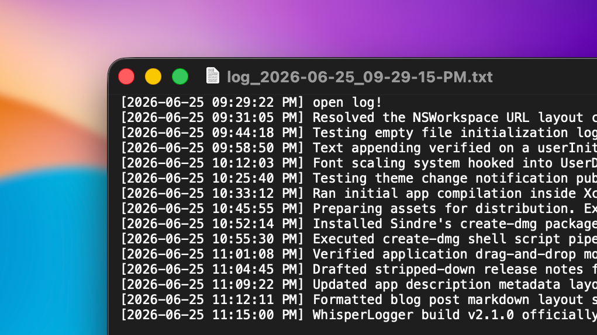
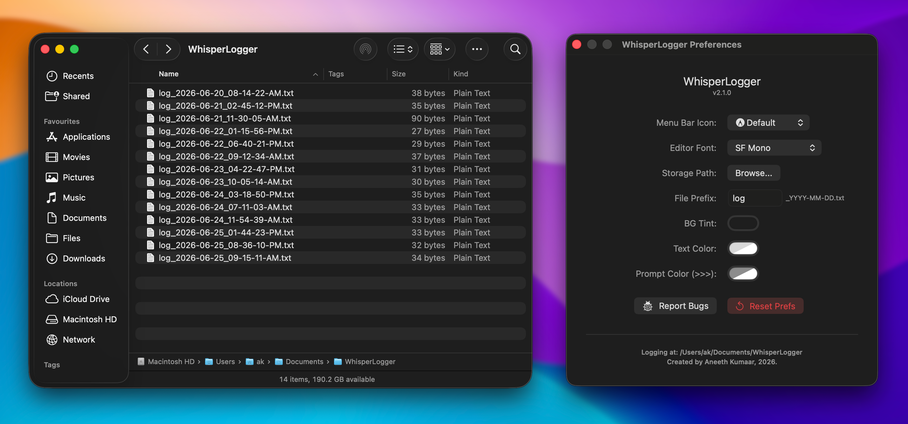

Every developer needs a friction-free way to jot down rapid logs, temporary scratch notes, or track task statuses throughout the day. Opening a bloated IDE window, a browser tab, or a heavy text editor disrupts your flow state.
To solve this, I built WhisperLogger: a distraction-free, ultra-lightweight native macOS utility designed to capture your chronological thoughts without pulling you away from your active workspace.
Here is a deep dive into the features, design choices, and core engineering behind the application.
The Feature Set
1. Zero-Friction Input Workspaces
The core UI layout is built explicitly around rapid keyboard entry. It utilizes an AppKit NSTextView backed layout inside a SwiftUI canvas wrapper to maintain highly responsive frame scaling, complete with custom styled prompt hooks (>>>). It natively supports standard power-user text mechanics:
Command + Return: Instantly commits the active log entry to your disk layer.Escape: Immediately hides the interface panel.
2. Streamlined Empty Log File Creation
WhisperLogger gives you complete flexibility over your organization. Using the ⌘ + Shift + Return keyboard shortcut, you can spin up a freshly timestamped text document on demand completely empty, perfect for initializing a clean daily workspace layout before you even start typing.
3. Integrated Live Folder Navigation (⌘ + O)
To keep your data highly accessible, pressing ⌘ + O directly within the active logging entry window instantly opens your output workspace directory inside a native Finder window so you can view, move, or share your raw text files seamlessly.
4. Custom Global Activation Hotkey & Recording
WhisperLogger can be summoned instantly from anywhere on your Mac with a system-wide hotkey. Built natively with the KeyboardShortcuts framework, it defaults to ⌥ + Space, but features a fully customizable, native recording field in Preferences so you can map it to whatever key combination fits your workflow.

Under the Hood: The Architecture
WhisperLogger is built to be fast, flexible, and completely friction-free. Here is how the core engine handles data under the hood:
1. Unsandboxed Execution & Cooperative Activation
To provide an unrestricted user experience where logs can be saved seamlessly anywhere on the file system, WhisperLogger runs as an unsandboxed utility. To prevent the application from stealing focus aggressively or getting trapped in the background under heavy window layouts, the app utilizes macOS 14+ Cooperative App Activation:
if let finderApp = NSRunningApplication.runningApplications(withBundleIdentifier: "com.apple.finder").first {
if #available(macOS 14.0, *) {
NSApp.yieldActivation(to: finderApp)
}
DispatchQueue.main.async {
NSWorkspace.shared.activateFileViewerSelecting([standardizedURL])
finderApp.activate(options: [])
}
}
By explicitly calling NSApp.yieldActivation(to:), the app neatly passes its focus token over to Finder. This ensures that your active log directory or text file instantly and reliably leaps straight to the foreground every single time you trigger a revelation shortcut.
2. Multithreaded Async Disk I/O Pipeline
To prevent dropped keystrokes or interface lag when committing long string streams, the entire file execution layer runs asynchronously:
DispatchQueue.global(qos: .userInitiated).async { [weak self] in
guard let self = self else { return }
// Secure append and system file synchronization logic
// happens completely out of process
self.refreshLogFiles()
}
Moving file serialization onto standard .userInitiated background worker channels ensures that text operations stay fast and concurrent, leaving the main thread completely untethered to keep the UI snappy and responsive.
Distribution & Presentation
To package the tool cleanly without dealing with bloated layout configuration files, the application is compiled into a drag-and-drop installer image natively aligned to macOS dark-mode standards.
Your active files are saved cleanly by timestamp, making it incredibly easy to parse your logging history linearly over days or weeks.
What’s Coming Next
While the application is fully optimized for targeted desktop logging, future lifecycle expansions are on the horizon, including:
- File Manager: A window that can preview all the files created by the application, in the working directory.
- Log-file Support: Support for log-files, since they are much more comfortable and easier to troubleshoot and work with.
- More UI Preferences: Self-explanatory.

WhisperLogger is officially running stable. Check out the release page to grab the latest DMG build!